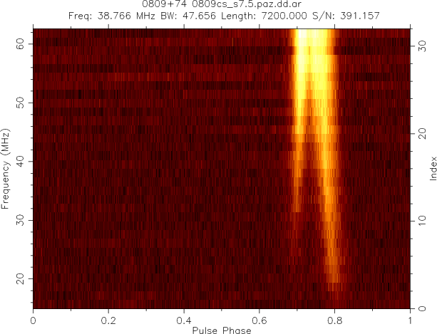
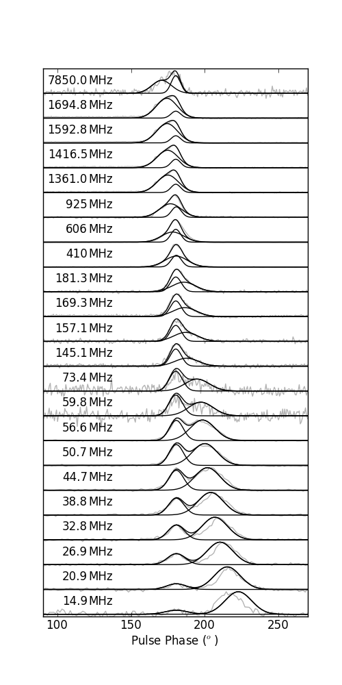
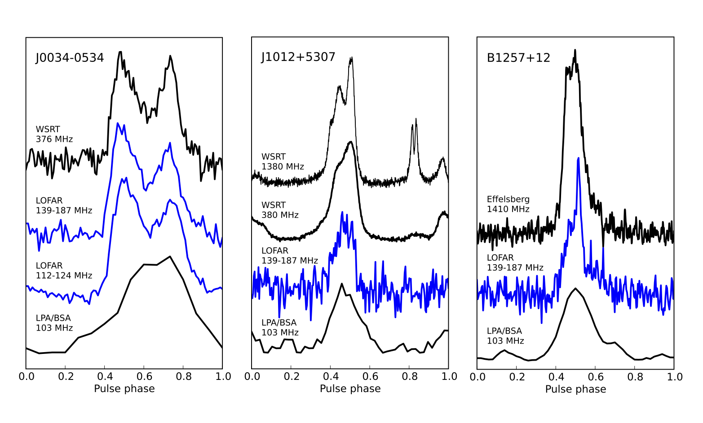
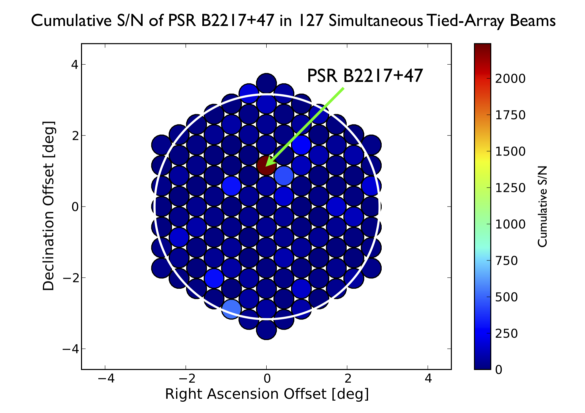
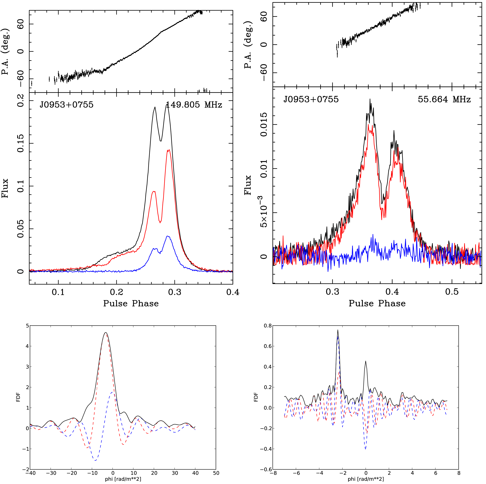
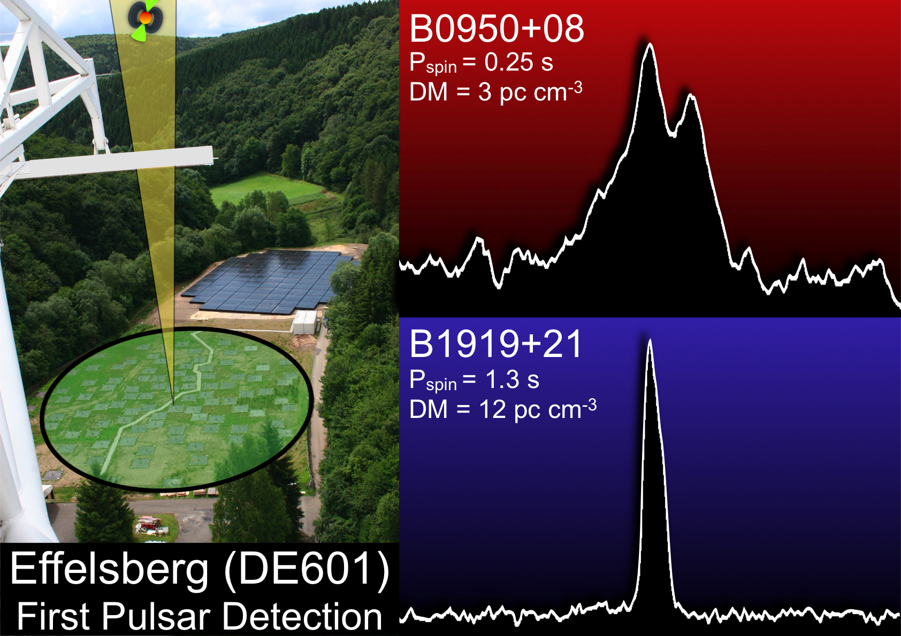

Pulsars are rapidly rotating, highly magnetised neutron stars that were first identified via pulsed radio emission at the very low radio observing frequency of 81 MHz (Hewish et al. 1968). They have subsequently been shown to emit pulsations across the electromagnetic spectrum, at frequencies ranging from 17 MHz to above 87 GHz (e.g. Bruk & Ustimenko 1976, 1977; Morris et al. 1997) in the radio and at optical, X-ray and γ-ray wavelengths (see Thompson 2000 and references therein), although the vast majority are seen to emit only at radio wavelengths. These pulsations provide invaluable insights into the nature of neutron star physics, and most neutron stars would be otherwise undetectable with current telescopes. Though radio pulsars form over 85% of the known neutron star population, they are generally very weak radio sources with pulsed flux densities ranging from 0.0001 to 5 Jy with a median of 0.01 Jy at a frequency of 400 MHz. The pulsed flux density at radio wavelengths exhibits a steep powerlaw spectrum (alpha = -1.8) that often peaks and turns over at frequencies between 100 and 200 MHz (Kuzmin et al. 1978; Slee et al. 1986; Malofeev et al. 1994).
After their discovery, a lot of the early work on pulsars (e.g. Cole 1969; Staelin & Reifenstein 1968; Rankin et al. 1970) continued at low radio frequencies (defined here as < 300 MHz). However, despite the fact that most pulsars are intrinsically brightest in this frequency range, since then the vast majority of pulsars have been discovered and studied at frequencies in the range 300–2000 MHz; much of our knowledge of the properties of the radio emission mechanism stems from studies at these frequencies and above. There are three main reasons for this: the deleterious effects of the interstellar medium (ISM) on pulsed signals; the effective background sky temperature of the Galactic synchrotron emission; and ionospheric effects. All three of these effects have steep power law dependencies on frequency and therefore become worse towards lower frequencies. Combined with the generally steep spectra of pulsars, these effects conspire to make observing frequencies of roughly 300–2000 MHz the range of choice for most pulsar studies and searches.
However, despite these challenges, there are many reasons why it is important and interesting to observe pulsars in a significantly lower frequency regime than now commonly used. In recent years some excellent studies have continued at frequencies between 20–110 MHz mainly using the Pushchino, Gauribidanur and UTR-2 telescopes (e.g. Malov & Malofeev 2010; Malofeev et al. 2000; Asgekar & Deshpande 2005; Popov et al. 2006b; Ulyanov et al. 2006). These studies have begun to map, e.g., the low-frequency spectra, pulse morphologies, and pulse energy distributions of pulsars, but have in some cases been limited by the available bandwidths and/or polarisation and tracking capabilities of these telescopes.
LOFAR provides a great leap forward in low-frequency radio observations by providing large fractional bandwidths and sophisticated multi-beaming capabilities. LOFAR has excellent properties for the study of known pulsars, and its huge field of view (FoV) makes it a powerful survey telescope for finding new pulsars and other "fast-transients". In the following, we elaborate on many of the exciting scientific topics.
|  |
Wide-band LBA observations of PSR B0809+74, detected down to 15MHz (Kondratiev et al. 2012, in preparation). |
The steep increase in the pulsed flux density of pulsars towards lower frequencies is seen to turn over for many pulsars around 100–250 MHz. However, some pulsars lack a spectral break in this region and even lower-frequency studies from 10–90 MHz are needed. For understanding the emission process and for modeling the pulsar population, it is very important to understand this spectral shape, but so far there are relatively few spectra that extend into the LOFAR HBA frequency range, and even fewer that extend to LBA frequencies (e.g. Malofeev 2000). Of particular interest are millisecond pulsars (MSPs) which appear to increase in intrinsic brightness well into the LBA band (e.g. Kramer et al. 1999). Is this related to the different field structure and strength compared with the unrecycled pulsars? LOFAR will be able to greatly increase the number of measured spectra. In the case of MSPs, for which emission may be scattered, we can get flux density measurements from continuum images. For the majority of pulsars, however, we will directly measure pulsed fluxes, including the spectral indices of individual pulse components. Correlating the spectral properties (e.g. spectral index and turn-over frequencies), with other properties of the pulsar (e.g. pulse shape, geometry and energetics) promises important insight into physical relationships, pulsar emission and geometry models (e.g. Lorimer & Kramer 2005, Handbook of Pulsar Astronomy, CUP). The average pulse profiles of radio pulsars are the sum of a large number of single pulses and reflect the long-term conditions in the pulsar magnetosphere. We expect the plasma dynamics and emission properties to be dominated by the dipolar magnetic field, and the emission to obey a "radius-to-frequency mapping" (RFM), such that lower frequencies are emitted further out in the magnetosphere (see Cordes 1978). There is some evidence for an evolution from "cone" emission at high frequencies to "core" emission at lower frequencies, possibly related to the 3-D distribution of plasma along the field lines and emission zones. In reality,the picture is often much more complex. For example our LOFAR commissioning observations are already seeing significant deviations from these simple relations when considering the wide frequency bands of LOFAR combined with simultaneous high frequency observations (Hassall et al 2012).
By extending this initial comparison of the profile evolution that will be visible over LOFAR's huge fractional bandwidth with profiles at higher frequencies, we can investigate these properties for a much larger class of pulsars than previously possible. A further important indicator of the relationship between the emission mechanism, the geometry, and the magnetosphere is the polarisation, which has seen very limited studies at low-frequencies so far. In simultaneous multiple high-frequency observations, strange polarisation variations have been seen which point directly to the physics of the emission regions (Karastergiou et al. 2001). Polarisation studies with LOFAR will provide insight into important questions such as how does the percentage polarisation evolve, is the polarisation position angle swing more or less complicated, and do polarisation properties change below the spectral break?
Our limited knowledge of the exact mechanism of pulsar radio emission, and the way it evolves during a pulsar's life, has only allowed us to classify pulsars according to certain phenomenological manifestations. More and more we are discovering that pulsars show variations in their emission properties on a whole range of timescales. There are a growing number that have two or more known modes of emission, each one producing significantly different average-pulse characteristics (i.e. the moding pulsars, like PSR J0538+2817); there are pulsars that occasionally produce single bursts or trails of successive pulses but remain invisible for most of the time (i.e. Rotating radio transients or "RRATS", like J1819-1503); and there are other phenomenological classes, like the intermittent pulsars (e.g. PSR B1931+24), which appear ordinary when they are visible (bright mode) but occasionally "switch off" and stay invisible for significant lengths of time (e.g. 80% of the time in "quiet mode"). Most recently even some of those that show mode changes where the pulse profile changes, even subtly, have associated changes in their spin properties (Lyne et al 2010). The timescales associated with the above emission modes make it likely that these phenomena are related to pulsar magnetospheric physics and that dedicated polarisation observations may be part of our key to understanding the underlying mechanism — and perhaps connect the various manifestations under a single mechanism. Recent observations with LOFAR have serendipitously recorded single pulses from the intermittent pulsar PSR B0823+26 during transition between its bright and quiet modes (Sobey et al., 2012 in preparation). This provided a unique data set containing high time and frequency resolution polarisation information, which allowed us to get a glimpse of the process of transition between modes. Interestingly, the data revealed intrinsic changes in the pulse morphology on timescales of a pulse period; these changes are possibly connected to the way plasma is distributed along the open field lines and may be an important clue to the general mechanism in pulsars that also explains the rest of phenomenological classes. Monitoring intermittent and moding pulsars with LOFAR has the potential of providing more of these rare glimpses of variable pulsar magnetospheric activity.
Our calculations show that in the LOFAR high band single pulses can be detected with reasonable signal-to-noise from at least one-third of pulsars while in the low band it is about one-quarter of pulsars. This is a very large increase on what has previously been possible and, when combined with LOFAR's ability to track sources, allows for a rich study of the emission physics. The quality of what is already possible with LOFAR single pulse observations is astounding (Stappers et al 2011). LOFAR will also be able to detect single pulses from MSPs, presently possible for just a few sources, and will allow us to compare, for the first time, the effects of mode changing, nulling and drifting subpulses (see Lorimer & Kramer 2005) of MSPs with their younger, higher magnetic field, slower spinning brethren. In some pulsars, subpulses are observed to drift in an organised fashion through the pulse window (e.g. Weltevrede et al. 2007). While drifting may be due to conditions within the pulsar magnetosphere, some pulsars show significant frequency evolution in the properties of these drifting subpulses. Low frequencies potentially probe a different sight line, but possibly a different height above the surface. Hence, LOFAR can be used to reconstruct the distribution of emission within the magnetosphere and constrain the location of the emission, while even greater constraints can be obtained by long simultaneous multi-frequency observations across the wide LOFAR bands and also in combination with high frequency telescopes (>1 GHz). There is also some evidence that both pulse intensities and drifting are less stable at low frequencies (Weltevrede et al. 2007). The greatly increased sample of pulsars for which single pulse studies with LOFAR are possible will help to confirm or refute this. Combining simultaneous multi-frequency observations of radio pulsars using multiple telescopes has proved very successful at revealing much about the processes discussed above (e.g. Karastergiou et al. 2001; Hassall et al 2012b, in prep.). Unfortunately, similar studies at low frequency have been hampered until now by the fact that, unlike LOFAR, the majority of available telescopes are transit instruments and so only short simultaneous observations are possible. Using LOFAR and high-frequency instruments simultaneously, we have already shown that we can study long trains of single pulses and can probe microstructure (quasi-periodic emission features seen in some pulsars with periods and widths on the order of microseconds). We would expect the density imbalances and plasma dynamics to be the most noticeable at low radio frequencies, so that their study can strongly influence emission models. While the high time resolution requirement of these observations and the existence of interstellar scattering will limit the number of pulsars that can be studied, there remain many tens of sources for which this can be done, making this a particularly exciting area of study.
|  |
Ultra-wide-band model for the pulse profile evolution of PSR B0809+74 (Hassall et al. 2012, submitted). |
While ultra-high-precision pulsar timing (at the ns to µsecond level) is not possible at low radio frequencies, understanding how a stable pulse profile used for pulsar timing is formed from the single pulses is absolutely crucial for enabling precision experiments in the SKA era (Cordes et al. 2004; Liu et al 2011). We will therefore investigate how the short-term properties will lead to the overall long-term properties and how we can translate this into enhanced timing performance. Moreover, LOFAR's large FoV, multi-beaming capability, and the availability and sensitivity of single stations enable many pulsars to be timed at sufficient precision and cadence to be of great scientific interest. Regular monitoring of the rotational behaviour of radio pulsars plays an important role in understanding the internal structure and spin evolution of neutron stars and how they emit. It is also an important probe of the interstellar medium and potentially for the emission of gravitational waves. Measuring dispersion measure variations and modeling the scattering of pulse profiles at LOFAR frequencies has the potential to help improve pulse shapes and changes therein and thus enhance high precision timing (e.g. You et al 2007; Demorest 2011). Rotational irregularities such as glitches are attributed to the physics of the super-dense superfluid present in the neutron star core and so their study allows us to probe a physical regime far beyond those that can be reached in laboratories on Earth (e.g. Lattimer & Prakash 2006; Espinoza et al 2011). These glitches might also trigger heating of the neutron star surface or magnetic reconnections which can be studied in either or both gamma-rays and X-rays. They may also cause sufficient deformation of the neutron star that it might be a gravitational wave emitter. To allow these follow-up observations requires the accurate determination of glitch occurence times which can be achieved through regular monitoring with LOFAR. Moreover the high energy emission from pulsars which is presently being studied in detail by the FERMI satellite and other telescopes like MAGIC (e.g. Abdo et al. 2009) and the search for non-burst like gravitational waves from pulsars (e.g. Abott et al. 2010) can only be performed with the provision of accurate pulsar rotational histories. Three relatively recently discovered manifestations of radio emitting neutron stars, the RRATs, the intermittent pulsars and the radio emitting magnetars can all greatly benefit from the monitoring capabilities of LOFAR. The RRATs are rotating neutron stars which emit approximately once in every 1000 pulses (McLaughlin et al. 2006). So far some 50 sources have been discovered but periods and period derivatives have only been determined for less than half of them (e.g. Keane & McLaughlin 2011). Determining these key parameters as well as better characterising the nature of their pulses are essential in understanding their relationship to the "normal" pulsars. The intermittent pulsars appear as normal pulsars for timescales of days to months, but then suddenly turn off for similar periods (Kramer et al. 2006). Remarkably when they turn-off they spin-down more slowly than when they are on, providing a unique and exciting link with the physics of the emission process itself. Observing more on-off transitions is vital to improving our understanding of this process. Until recently, magnetars, extremely highly magnetised rotating neutron stars, were thought to emit only in gamma-rays and X-rays, however two such sources are now known to emit in the radio, albeit in a highly variable way. This emission is thought to be triggered by an X-ray burst event and to subsequently fade dramatically. However, only by monitoring these sources in the radio can we understand the link with the burst and how long these sources remain radio emitters.
|  |
Detection of 3 millisecond pulsars with LOFAR (Hessels et al. 2012, in preparation). |
Pulsar surveys remain a vital area of pulsar astronomy because they continue to drive important advances in our understanding of these objects and related science (e.g., "A Radio Pulsar/X-ray Binary Link", Archibald et al. 2009, Science, 324, 1411; "An Eccentric Binary Millisecond Pulsar in the Galactic Plane", Champion et al. 2008, Science, 320, 1309; "A Radio Pulsar Spinning at 716 Hz", Hessels et al. 2006, Science, 311, 1901; "A two-solar-mass neutron star measured using Shapiro delay", Demorest et al. 2010, Nature, 467, 1081). Simply put, the scientific yield of large-scale pulsar surveys comes in two forms:
Pulsars are steep spectrum objects whose pulsed flux density usually peaks in the 100 - 200 MHz range, exactly the frequency range where LOFAR will have maximum and unprecedented sensitivity. This, combined with LOFAR's huge field-of-view (FoV), make it an excellent telescope for carrying out an efficient and sensitive all-Northern-sky pulsar survey. The disadvantage of low-frequency pulsar observations is that dispersion and scattering of pulses by the interstellar medium is much stronger towards low frequencies. Previous pulsar surveys have moved to higher frequencies to escape these two forms of pulse smearing. However, the natural frequency decimation and the powerful processing capability of LOFAR mean that for the first time the dispersion effects can be greatly reduced. Scattering will limit the effective volume of the Galactic disk that can be surveyed. Thus we will probe the nearby regions in the Galactic plane while at higher Galactic latitudes, where there are less free electrons, we can search to very large distances. To test the potential of LOFAR for pulsar surveys we have carried out sophisticated simulations using realistic source population and scattering models. These show that for an optimized pulsar survey with LOFAR we can find approximately 900 new pulsars in the Northern sky (van Leeuwen & Stappers 2009) more than doubling the present known population in that area.
The principal scientific goals of an all-sky LOFAR survey are:
Searches for pulsars in globular clusters (GCs) and nearby galaxies can be done with much higher sensitivity than for all-sky surveys, where there is always a trade-off between observing time per pointing, i.e. instantaneous sensitivity, and the time required to complete the survey. GCs represent very compact regions in the sky and are completely confined within the LOFAR tied-array beam (even using the whole core in most cases). Thanks to their high stellar densities, GCs can form X-ray binaries via exchange interactions, which makes them very good targets for MSP searches. In fact, there are already more than 140 pulsars known inside 28 globular clusters with the vast majority of them being MSPs (see, e.g., Freire 2011). The rich stellar interaction history in GCs, can lead to the formation of many exotic systems, like highly eccentric binaries (Ransom et al., 2005, Freire et al. 2007), the fastest MSP so far (Hessels et al. 2006), and many "black widow" systems (King et al. 2005). LOFAR will find many new pulsars, including exotic binary systems, that were missed in higher-frequency surveys of Northern sky with the Arecibo, GBT and Effelsberg radio telescopes. The steep spectra of pulsars means that they can be brighter at low frequencies. Studies have shown that some MSPs do not have turn over in their spectra even down to LBA frequencies (Kuzmin & Losovsky, 2001; Kramer et al. 1999). GCs are spherically distributed from the Galactic center, and many of them are far from the plane. Thus, even being within several kpc, there is not a large electron column density along their line-of-sight, and therefore their dispersion measure is not very high. The smearing due to dispersion can be completely compensated by performing online coherent dedisperion which was recently developed and tested, and currently LOFAR can set 40 different DMs at one time for different tied-array beams (Mol & Romein 2011). LOFAR has already demonstrated its ability to observe known millisecond pulsars and produce high-quality profiles never obtained before at such lower frequencies. For pulsars within the same GC the dispersion measure is constrained to a limited range of values, and combining online coherent dedispersion for some median dispersion measure value with offline incoherent dedispersion will provide the most effective targeted pulsar searches with LOFAR. In addition, to dispersion smearing, the pulsar signal will be broadened due to the scattering in the ISM, which could hamper detection of MSPs. van Leeuwen and Stappers (2010) have estimated that at the frequency of 200 MHz, the limiting dispersion measure is about 60–80 pc/cc, and higher for longer-period pulsars. For most of the Northern GCs, the dispersion measure is less than 70pc/cc, and LOFAR has great potential to detect those MSPs still missing.
Searching for pulsars in external galaxies is in essence very similar to searches in GCs, except that even the closest galaxies, like the Magellanic Clouds, are more than 10 times further away than pulsars in our Galaxy. Still, at present we already know about 20 extragalactic pulsars from both the LMC and SMC, which represent the high-end tail of luminosity distribution (Manchester et al. 2006). Going to distances >50 kpc significantly reduces the odds of detecting pulsars via standard periodicity searches as the pulsar flux decreases as distance squared and the signal gets more dispersed and scattered. Extragalactic pulsars, however, still can be detected by their single pulses, in particular giant pulses (GPs). Giant pulses are observed from both young energetic pulsars, e.g. the Crab pulsar, and old millisecond pulsars, like PSR B1937+21. One of the young pulsars in the LMC, B0540-69, was in fact also discovered by its giant pulses (Johnston & Romani, 2003). McLaughlin & Cordes (2003) estimated the maximum distance from which we can still see GPs from young Crab-like and old recycled B1937+21-like pulsars. They have steeper spectral index (-3 to -4.5) and at LOFAR low frequencies can be detected from up to 1.5 Mpc for young Crab-like GPs. The potential targets for these pulsars are galaxies from the Local Group that have active star formation, like Andromeda (M31), Triangulum (M33) and a few irregular (IC10) and dwarf irregular galaxies. The majority of nearby Local Group galaxies are dwarf spheroidal galaxies with old star populations and, thus, are promising sites for recycled MSPs. Searches of Andromeda, M33, and several dwarf galaxies undertaken using the Arecibo, GBT, WSRT, and Parkes radio telescopes have so far been unsuccessful or, at best, not conclusive (McLaughlin & Cordes, 2003; Rubio-Herrera 2010; Kondratiev et al. 2010). LOFAR has enough sensitivity to discover the brightest pulses from pulsars in nearby galaxies. The dispersion measures can be as low as 30-40 pc/cm^3, but strongly depends on how far the galaxy is away from the Galactic disk, and whether we observe it edge-on or face-on. All galaxies will fit inside the FoV of the coherent Superterp which can be tiled with 127 tied-array beams. The whole Andromeda field with all its satellites can be observed simultaneously with about 50 tied-array beams. A survey for extragalactic pulsars will allow the possibility to investigate the most luminous part of pulsar population and compare it to the local distribution, and can be used to trace the history of massive star formation, and how it depends on the galaxy type. Extragalactic pulsars are independent measures of distance scales to other galaxies, and furthermore, they would allow us to probe the intermediate intergalactic medium.
Beyond regular pulsars, other, more exotic neutron stars are seen to show transient radio emission. Several anomalous X-ray pulsars and magnetars appear to be only detectable at frequencies near 100 MHz (e.g. Malofeev et al. 2006), offering an intriguing possibility to study more of these high-magnetic-field objects in the radio band, if confirmed. The potential 100-MHz detection of Geminga, a prominent rotation-powered pulsar visible at optical, X-ray and gamma-ray wavelengths (Malofeev & Malov 1997), could exemplify a population of neutron stars that may be only detectable at long radio wavelengths. New LOFAR magnetar detections would offer insight into both the emission and the behavior of matter in ultra-strong magnetic fields. Similarly, the non-detection of radio emission from X-ray dim isolated neutron stars (XDINSs) thus far (e.g. Kondratiev et al. 2009), could be due to the beams of these long-period sources being quite narrow at high frequencies and there may be a better chance to detect them in radio at LOFAR frequencies. In fact, weak radio emission from two XDINSs, RX J1308.6+2127 and RX J2143.0+0654, was reported by Malofeev et al. (2007) at 111 MHz, but remains unconfirmed. It is thus important to detect these sources with LOFAR. The strong magnetic fields and X-ray emission of XDINS are very similar to the more distant rotating radio transients (RRATS); a firm detection of radio emission from XDINS would thus tie together these two so-far distinct populations of neutron stars. Equally important to study are the ∼30 pulsars discovered in blind searches of Fermi gamma-ray photons, many of which do not exhibit detectable radio emission (Abdo et al. 2009, Science, 325, 840), as well as the hundreds of remaining unidentified gamma-ray sources, many of which have spectral characteristics that suggest them as likely pulsars, but which have not yet been detected in the radio (e.g. Ransom et al. 2010, ApJL, 727, 16). As these sources are generally nearby and dim, the detection of even a small number of them has a large impact on the local neutron-star density and (millisecond-)pulsar formation rate.
|  |
127-beam tied-array observation using the LOFAR Superterp. |
One of the main pulsar characteristics is that a large fraction of their emission is highly polarised (up to 100% linear polarisation has been observed; Karastergiou et al. 2005). In polarisation, there have been very few pulsar surveys that provided statistical information on the spectrum of the polarised flux down to low frequencies: Gould & Lyne (1998) surveyed 300 pulsars between 1600 and 230 MHz. Although some trends in linearly polarised flux (L) were seen in that work, there was no conclusive statement on the polarised fraction, L/I, as a function of frequency. In addition, those surveys could not probe the interesting frequency region of ∼100 MHz, where several pulsars are expected to show a spectral turnover. LOFAR is ideally sensitive at frequencies where pulsars are at their brightest. However, we do not know whether this is true for the polarised pulsar flux. A combination of polarisation measurements in the LBA and HBA bands with polarisation measurements at high frequencies will allow us to map the complete spectrum of polarised pulsar emission. In addition, the assumption of radius-to-frequency mapping (e.g. Kramer et al. 1996) means that these observations will trace the open-magnetic field line geometry and give us statistically significant clues as to the efficiency of curvature emission at different altitudes. The combination of LOFAR data with those from high-frequency observations will provide, for the first time, a complete map of the radio spectrum of hundreds of polarised pulsars, from tens of MHz to several GHz.
The inhomogeneous interstellar medium disperses, scatters and rotates the plane of polarisation of polarised pulsar signals. The magnitude of all of these effects scales strongly with observing frequency; in the LOFAR band these effects will be strongest, which translates to increased precision in measuring their effect. Using LOFAR's powerful signal processing capabilities allows us to easily measure and correct for pulse dispersion and Faraday rotation. However, accounting for pulse scattering requires the knowledge of the matter distribution along the line of sight (LOS) which is much more difficult to model and correct for. Importantly, scattering can depolarise pulsar signals: the multi-path propagation of scattered polarised emission means that linearly polarised signals with different polarisation states could arrive simultaneously at the telescope, resulting in observed signals that are the sum of different emission phases. The effect of scattering on pulsar polarisation position angles (PAs) and RMs has been clearly displayed in a number of publications (Li & Han 2003; Karastergiou 2009; Noutsos et al. 2009), where it was shown that the PA profiles of pulsars are flattened by scattering, and that scattering causes the amount of Faraday rotation (i.e. the rotation measure of RM) to appear variable as a function of pulse phase — although in reality it remains constant across the pulse. Also, LOFAR observations of the Crab pulsar — embedded in the Crab nebula — during a period when the pulsar appeared highly scattered, revealed that the polarisation of the pulsar was significantly diminished compared to previous epochs. The reduced polarisation by almost 100% may well be associated with filamentary structure crossing our LOS to the pulsar, scattering and depolarising the signal (Wucknitz et al., in preparation). Such observations can be used not only to show the effects of scattering on polarisation, but also to estimate the size and velocity of the scattering screens (see, e.g., Smith et al. 2011). A combination of HBA and LBA LOFAR observations of scattered pulsars will provide ample bandwidth that could be used to measure and model the ISM effects as a function of frequency, and potentially recover the unscattered, intrinsic pulse shapes. Ultimately, these observations will be used in the development of a global ISM model of our Galaxy.
Pulsars play a central role in detecting interstellar magnetic (ISM) fields in the Galaxy. Polarisation observations of hundreds of pulsars have been used in the literature to map the large-scale features of the Milky Way's magnetic field (Noutsos et al. 2008; Nota & Katgert 2010; van Eck et al. 2011). The linearly polarised pulsar emission is subjected to Faraday rotation through the magnetised ISM. The magnitude and direction of the magnetic field between us and the pulsars can be detected by measuring the RM of pulsars at different locations in the Galaxy. Measurements of pulsar RMs becomes a simple matter with the large bandwidths and high frequency resolutions of modern backends. LOFAR has the advantage of operating at a low frequency, which means that even weak magnetic fields corresponding to small RM cause a significant change of the linear-polarisation plane with frequency and are therefore easier to measure. In addition, LOFAR has a large collecting area and bandwidth, which provide a high signal-to-noise in linearly polarised intensity and ensures that small pulsar RMs create enough detectable Faraday rotation across the band. All of the above are critical for measuring ISM fields with LOFAR because - due to limitations imposed by pulse scattering - LOFAR is sensitive to nearby pulsars in the Galactic Plane and high-latitude pulsars anywhere in the Galaxy. Those pulsars are expected to have small RMs. The sensitivity of LOFAR together with the increasing pulsar brightness towards low frequencies will yield a new population of dim pulsars that could not be found in high-frequency surveys. These pulsars are invaluable for the studies of the Galactic magnetic field: upon measuring their RMs, they will provide new information about the strength and direction of the magnetic field in previously unexplored directions and locations in the Galaxy. More specifically, very little is known about the magnetic field properties of the Milky Way beyond a few hundred parsecs from the Galactic Plane. Extra-galactic polarised sources, assumed to be at infinite distance, have been successfully used to probe large-scale trends as a function of longitude and latitude; with pulsars at known distances we can truly map the field's strength and direction as a function of Galactic height; this will yield properties, like the scale-height and symmetry of the large-scale configuration that remain unknown or, at least, uncertain. Critically, those pulsars found nearby in the Galactic Plane will increase the number of sightlines in the solar neighbourhood. The increased statistics will help us determine local structures (interstellar bubbles) that are not associated with a global magnetic field configuration but distort the polarised signals passing through them. Knowledge of the location of such features will be used to estimate their impact on global models of the Galactic magnetic field. Another exciting prospect is the possibility of detecting, for the first time, ordered magnetic fields in globular clusters (A. Scaife, priv. communication). For example, the globular cluster M15 contains several known pulsars with accurately known ephemerides. The two brightest pulsars in M15, PSRs J2129+1210A,B, are ideally located on opposite sides of the cluster's barycentre, which provides a good separation in terms of magneto-ionic content and, possibly, a difference in the magnetic field direction (i.e. opposite RM sign). If polarisation is detected from those pulsars, it will be possible to measure their RMs and infer an average magnetic field magnitude. The RM difference between these pulsars is expected to be very small (∼0.1 rad / m2). Hence, these observations will need to take advantage of the sensitivity of LOFAR and its large fractional bandwidth, but will also required careful ionospheric calibration.
|  |
Polarimetric profiles for PSR B0950+08 in both the LOFAR low and high bands (Sobey et al., in preparation). |
The properties of individual LOFAR stations make them particularly competitive instruments for pulsar and fast transient science. Specifically, the 96 elements of the HBA and LBA arrays in the international stations add up to sensitivity levels comparable to a third of the LOFAR Superterp, which is sufficient to detect single pulses from a sizeable sample of bright pulsars. Individual stations can either be controlled centrally, in which case the data flow back to the Netherlands, or locally by means of additional hardware and software. One solution for single station processing and recording is the ARTEMIS system. ARTEMIS stands for "Advanced Radio Transient Event Monitor and Identification System". The hardware consists of 4 24-core servers connected to 4 high end NVIDIA GPU cards. These are all fed data through a broadband (10-Gigabit Ethernet) switch, which is also responsible for sending the data back to the Netherlands during normal LOFAR operations. The servers are also connected via ethernet to a network storage device. The beam-formed data being created adds up to a stream of 3.2 Gigabits/s, which consists of a sky bandwidth of approximately 48 MHz, sampled at 5 microsecond intervals, in two polarisations. The ARTEMIS servers perform in real-time all the operations necessary to record data in a format that can be processed by standard pulsar software, and which is needed discover short duration radio pulses from pulsars and fast transients. Software modules exist for receiving the data, for channelisation into finer frequency channels, generation of Stokes parameters, excision of radio frequency interference, integration, real-time searches for dispersed radio pulses and detection of interesting signals.
Given the properties of single LOFAR stations, there are specific science areas which substantially benefit from observations with single stations. These include:
|  |
Pulsar detections using the Effelsberg LOFAR station (DE601). |
{kind=link}
{kind=link}
{kind=link}
{kind=link}
{kind=link}
{kind=link}